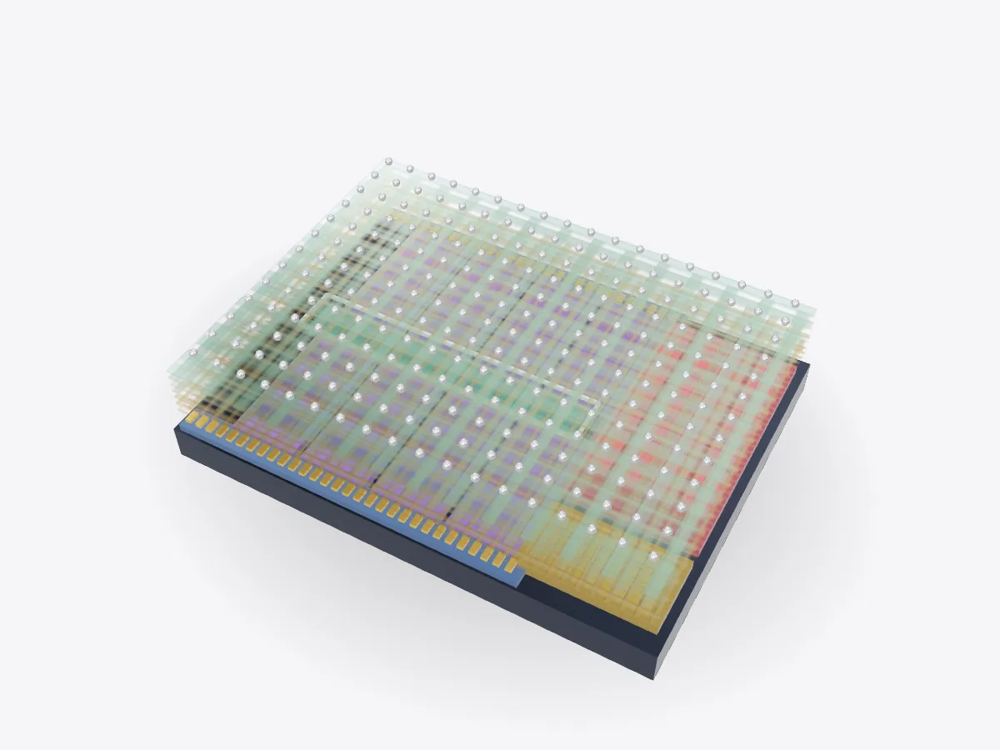

01 / 05
Overview
9 parts, one idea.
Explore a processor die in 3D: CPU cores, cache, graphics, memory controller, I/O and the metal wiring layers. Zoom down to a single FinFET transistor.
Drag to orbit, pinch or scroll to zoom, tap any part.
How it works · Tech
A chip is a city drawn on silicon: neighbourhoods of cores, warehouses of cache and a dozen floors of copper streets above them.

Scores are saved on this device only.
01 / 05
Overview
Explore a processor die in 3D: CPU cores, cache, graphics, memory controller, I/O and the metal wiring layers. Zoom down to a single FinFET transistor.
Drag to orbit, pinch or scroll to zoom, tap any part.
02 / 05
Explode
Keep scrolling and every part slides away from the centre, so you can see how they fit together.
03 / 05
Slice
A section plane sweeps through the model as you scroll. Pick an axis and set the depth yourself.
04 / 05
Parts
Pick a part or tap a glowing dot. It lights up and everything else fades back.
05 / 05
Facts
Chip silicon is pulled as a single crystal from molten silicon.
Leading chip factories process wafers 300 millimetres across.
Node names are marketing labels, not the size of any one feature.
Explained
A processor die is a small rectangle of silicon covered in circuitry. From above, a die photo looks like a city map. Large repeating blocks are the CPU cores. Big, even-looking areas are cache memory. Graphics, memory controllers and input/output circuits have their own regions, usually around the edges. This model is a generic layout, not a copy of any real chip.
Cache is used so much because memory is slow compared with a core. Fetching data from the RAM sticks can take hundreds of clock cycles, so chips keep recently used data in fast on-chip SRAM. A typical design has small, very fast caches inside each core and a larger shared cache that all the cores can reach over the interconnect.
It starts with silicon refined to extraordinary purity and grown into a single crystal by the Czochralski process, in which a seed crystal is slowly pulled and rotated out of molten silicon. The crystal is sliced into thin wafers, polished, and taken through hundreds of steps. Photolithography projects the circuit pattern onto light-sensitive resist, and the newest machines use extreme ultraviolet light with a wavelength of 13.5 nanometres.
Transistors are built first, at the surface. Then layer after layer of copper wiring is added on top, separated by insulation and joined by vertical vias. The lowest layers are incredibly fine and connect neighbouring transistors. The top layers are thick and carry power across the whole chip. Finally the wafer is tested and cut into individual dies. Names like "3 nm" describe a manufacturing generation, not the actual size of a transistor.
Every block on the die is made of transistors. Most modern chips use FinFETs, where the channel is a thin vertical fin of silicon and the gate wraps around it on three sides. Wrapping the gate around the channel gives it better control, so the transistor switches cleanly and leaks less current when it is off. Newer designs go further and surround the channel on all four sides.
Use Slice to cut through the stack, Explode to lift the wiring layers apart, and Zoom in Play to go from the whole die to one core and then to a single transistor.
D3DDD
D3DDD makes them: product cutaways, exploded views, architectural renders and technical drawings.